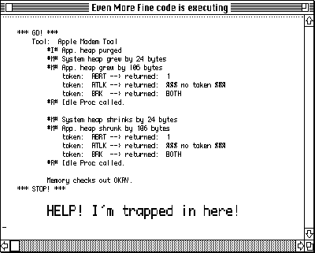
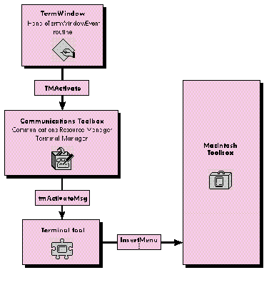

A major feature of System 7 is the fact that the Macintosh Communications Toolbox is
built in and available for all to use. This article presents code that uses the
Communications Toolbox Terminal Manager to implement a simple text window that
can be dropped into any application. The window is useful for displaying debugging or
status information such as variable values or memory usage during application
development.
Many times, when writing code, I've wished I had some sort of text repository, a place
to write some quick text. I tried to use TextEdit for this at first, but its structures
grow as you add text, so my memory accounting became confused. Sprinkling DebugStr
calls throughout the code told me what I needed to know most of the time, but they were
interruptive to both the user interface and timing- sensitive functions. Finally, I
turned to the Terminal Manager because in addition to a terminal tool it contains the
nuts and bolts necessary to display a text window and uses a fixed amount of memory.
TermWindow, included on theDeveloper CD Series disc, consists of a few simple
routines that use the Terminal Manager and a terminal tool to display text in a
Macintosh window. The package can be used in any application for purposes such as
displaying variable values, heap checks, memory usage, and routine paths. I've even
used some features of the terminal tool to grab attention, like having text blink when I
encounter an OSErr or when memory begins to get tight.
Figure 1 shows a sample TermWindow terminal emulation window. I used the
Developer Technical Support (DTS) Sample application (included with MPW) and the
Apple VT102 tool to produce the display. The double-high/double-wide text shown in
the figure is a feature of the VT102 emulator. I displayed it by writing the escape
sequences shown on the next page to the window. (Two lines are needed for double-high
text, one to display the top half of the line, and one for the bottom half.)
<ESC>#3HELP! I'm trapped in here! <ESC>#4HELP! I'm trapped in here!

Figure 1A TermWindow Window
The file TermWindow.h defines a basic TermWindowRec structure that TermWindow
uses internally for housekeeping and for storage of other structures, including the
handles for the terminal and control records.
struct TermWindowRec
{
WindowRecord fWindowRec; // so it can be a WindowPtr
short fWindowType; // for application use
TermHandle fTermHandle; // CTB terminal handle
TermEnvironRec fTermEnvirons; // environment info
ControlHandle fVertScroll; // vertical scroller
ControlHandle fHorizScroll; // horizontal scroller
Point fMinWindowSize; // min. width/height of window
};
typedef struct TermWindowRec TermWindowRec;
typedef TermWindowRec *TermWindowPtr;
Six prototype routines, used to put TermWindow to work in an application, are also
defined in the header file TermWindow.h.
pascal OSErr InitTermMgr(void);
pascal OSErr NewTermWindow(TermWindowPtr *termPtr,
const Rect *boundsRect,
ConstStr255Param title,
Boolean visible,
short theProc,
WindowPtr behind,
Boolean goAwayFlag,
Str31 toolName);
pascal OSErr DisposeTermWindow(TermWindowPtr termPtr);
pascal Boolean IsTermWindowEvent(TermWindowPtr termPtr,
const EventRecord *theEventPtr);
pascal void HandleTermWindowEvent(TermWindowPtr termPtr,
const EventRecord *theEventPtr);
pascal OSErr WriteToTermWindow(TermWindowPtr termPtr,
Ptr theData, Size *lengthOfData);
The six TermWindow routines are easy to use. After normal Macintosh manager
initialization, you'll initialize the Terminal Manager with a call to InitTermMgr and
then call NewTermWindow. The NewTermWindow function allocates the
TermWindowPtr, terminal handle, and control handles. It also creates a Macintosh
window complete with scroll bars and then attaches the terminal emulation region to
the window with a call to TMNew. (See the next section for more on initialization.)
There are two functions to handle events, IsTermWindowEvent and
HandleTermWindowEvent. These should be placed in your application event loop.
IsTermWindowEvent determines whether the incoming event is for the emulation
window by looking at the EventRecord structure, and it also provides time to the
terminal emulator by calling TMIdle. HandleTermWindowEvent is a dispatcher that
routes the event to routines that in turn call the Terminal Manager to process the
event. These routines are discussed in more detail in the section "Handling Events."
The WriteToTermWindow routine, discussed later in this article under "Writing
Text," uses the Terminal Manager to display your data in the terminal emulation
window. And finally, DisposeTermWindow performs window and structure cleanup.
The InitTermMgr routine prepares to initialize the Terminal Manager by checking the
status of three Gestalt selectors: gestaltCTBVersion, gestaltCRMAttr, and
gestaltTermMgrAttr. (We don't have to check for Gestalt, since MPW 3.2 contains the
code to make Gestalt work.) The gestaltCTBVersion selector tells us which version of
the Communications Toolbox is available, thereby letting us know that it exists. The
gestaltCRMAttr and gestaltTermMgrAttr selectors tell us, respectively, whether the
Communications Resource Manager (which must be initialized for tool resource
handling) and Terminal Manager are available for use. InitTermMgr then calls the
Communications Toolbox initialization routines if each Gestalt call returns a value of
true. It all looks like this:
pascal OSErr InitTermMgr(void)
{
OSErr result = noErr;
Boolean hasCTB, hasCRM, hasTM;
long gestaltResult;
hasCTB = (Gestalt(gestaltCTBVersion, &gestaltResult) ?
false : gestaltResult > 0);
hasCRM = (Gestalt(gestaltCRMAttr, &gestaltResult) ?
false : gestaltResult != 0);
hasTM = (Gestalt(gestaltTermMgrAttr, &gestaltResult) ?
false : gestaltResult != 0);
if ((hasCTB) && (hasCRM) && (hasTM))
if (noErr == (result = InitCRM()))
if (noErr == (result = InitCTBUtilities()))
if (noErr == (result = InitTM()))
return (result);
} /*InitTermMgr*/
You may wonder whether the Communications Toolbox requires that the Macintosh
Toolbox managers be started up at initialization time. The Communications Toolbox
managers are loaded in the system heap, so you may have other reasons for starting
them up in your initialization routine, but TermWindow's only requirement is that
InitTermMgr be called at some point beforeNewTermWindow. Because the
NewTermWindow routine has the potential to allocate nonrelocatable memory, calling
InitTermMgr and NewTermWindow at initialization removes the possibility of heap
fragmentation.
NewTermWindow begins by validating each parameter that was passed and assigns
default values if necessary (see Table 1 below; refer to "The Header File" earlier in
this article for the NewTermWindow declaration). You might notice that a good deal of
the parameter list to NewTermWindow is very similar to that for the NewWindow
function in the Macintosh Toolbox. The NewTermWindow parameter list is designed to
provide as much window control as possible when calling NewWindow, while also
adding the functionality for the terminal emulation region. Calls to NewControl attach
scroll bars to the window being created.
Table 1 NewTermWindow Defaults
| Parameter Name | Default Value |
| termPtr | Pointer allocated for TermWindow |
| storage | |
| boundsRect | FrontWindow window size |
| title | "\pStatus" |
| visible | True |
| theProc | ZoomDocProc |
| behind | FrontWindow |
| goAwayFlag | False |
| toolName | TMChoose user setup dialog box |
Once the Macintosh window is ready, NewTermWindow attaches the terminal emulation
region to the window with a call to TMNew. Parameters to the TMNew routine tell the
terminal tool, via the Terminal Manager, how to set up the emulation. (Terminal tools,
not the Terminal Manager, implement the emulation.) The basic TMNew prototype is
as follows:
pascal TermHandle TMNew(const Rect *termRect,
const Rect *viewRect,
TMFlags flags, short procID, WindowPtr owner,
TerminalSendProcPtr sendProc,
TerminalCacheProcPtr cacheProc,
TerminalBreakProcPtr breakProc,
TerminalClikLoopProcPtr clikLoop,
TerminalEnvironsProcPtr environsProc,
long refCon, long userData);
In TermWindow's case, NewTermWindow sets termRect and viewRect to the portRect of
the window's grafPort minus the scroll bar area and sets the flags parameter to 0L.
(This enables the terminal tool to put up custom menus or provide error alerts to the
user.) The procID parameter is a terminal tool reference number (obtained with
TMGetProcID) that tells the Terminal Manager which tool to use. The owner parameter
is set to the WindowPtr of our Macintosh window. The procedure pointers, refCon, and
userData are all set to nil or 0L.
termPtr->fTermHandle = TMNew(&termRect, &termRect, 0L, procID,
(WindowPtr)(*termPtr), nil, nil, nil,
nil, nil, 0L, 0L);
Your application's main event loop should use the two event-handling routines,
IsTermWindowEvent and HandleTermWindowEvent, to process events for the emulation
window and to determine whether the event has already been handled. I use the
following fragment just after calling WaitNextEvent; it sets the gotEvent flag to false
when TermWindow has processed the event, so that I don't try to handle the event
twice.
if (IsTermWindowEvent(&gTheEvent, gTermWindowPtr)) {
HandleTermWindowEvent(&gTheEvent, gTermWindowPtr);
gotEvent = false;
}
IsTermWindowEvent uses FindWindow or the message field of the event record to
determine whether the event is for the terminal window. (SeeInside Macintosh Volume
I, page 250, for details.) IsTermWindowEvent is also a convenient place to give the
terminal tool idle time; it calls TMIdle to give the tool a chance to draw text or blink
the cursor. (Some terminal tools also have the ability to display blinking text; that
would be done here also.)
The HandleTermWindowEvent routine is fairly straightforward, especially if you've
written window- and scroll-handling code before. As is true when handling normal
windows, the what field of the event record defines the work to be done. Terminal
Manager routines exist for most of this work, so handling events is primarily a matter
of calling the right routine at the appropriate time. For example, window activation
and deactivation are communicated to the tool with a call to TMActivate.
TMActivate(termPtr->fTermHandle,
(0 != (theEventPtr->modifiers & activeFlag)));
Figure 2 illustrates how a message like TMActivate is routed to accomplish its goal.
The Terminal Manager receives the TMActivate call and routes the tmActivateMsg
message to the terminal tool. The terminal tool then takes the opportunity to call
Macintosh Toolbox routines such as InsertMenu or RemoveMenu (if the tool uses a
custom menu, as the VT102 tool does) to keep the screen up to date.
Update events are handled by a call to TMUpdate sandwiched between BeginUpdate and
EndUpdate. You'll just need to pass TMUpdate the update region freshly calculated by
BeginUpdate. Of course, if you check for an empty region first, you won't have to call
TMUpdate at all.
BeginUpdate((WindowPtr)termPtr);
if (nil != ((WindowPtr)termPtr)->visRgn)
TMUpdate(termPtr->fTermHandle, ((WindowPtr)termPtr)->visRgn);
EndUpdate((WindowPtr)termPtr);

Figure 2 Calling TMActivate
Mouse-click handling is also fairly traditional. FindWindow is used to determine
where in the window the click took place, and Terminal Manager routines are called to
let the terminal tool know what to do. When a zoom or grow event causes the size of the
emulation rectangle to change, the window's portRect gets passed to TMResize. If
FindWindow returns inContent, FindControl is used to determine the control in which
the click occurred, so that TermWindow will know whether to scroll horizontally or
vertically. The partCode returned from FindControl tells how much to scroll by
indicating the part of the control where the click took place. If FindControl returns nil
for the ControlHandle parameter, the click is in the emulation region and TMClick is
called.
Writing data is easy via the WriteToTermWindow routine. Here's an example of a
WriteToTermWindow call with tempString declared as a char array:
sprintf(tempString, "Hello, world"); dataLength = strlen(tempString); osResult = WriteToTermWindow(termPtr, tempString, &dataLength);
In a debugging situation, you might want to do something like the following to keep
track of heap size:
gAppHeapRef -= FreeMem();
if (gAppHeapRef) {
sprintf(tempString, "\t\t#M# App. heap grew by %ld bytes",
gAppHeapRef);
dataLength = strlen(tempString);
osResult = WriteToTermWindow(termPtr, tempString, &dataLength);
}
WriteToTermWindow hands the data off to the terminal tool, via a call to TMStream.
You might be tempted here to think that the data should appear in the window
immediately, but it doesn't--it's simply put in the terminal tool buffer. The terminal
tool waits for a TMUpdate or TMIdle before actually writing to the window. Another
point to remember when working with terminal tools is that display fonts are
controlled by the terminal tool; in fact, many use specific terminal fonts.
That's really all there is to using this simple text window. Now that you have some
base code to work from, you might want to add the communication abilities needed to
talk to another computer by using Connection Manager calls like CMRead or CMWrite
and telling the terminal tool when to use them with procedure pointer parameters to
TMNew. How about extending TermWindow to write all data displayed to a file? Or if
you're really up to a challenge, try adding a scroll-back cache to store data that gets
scrolled out of the emulator. Just scrolling the data around is not too difficult, but
brush up on your region handling when you try to work with selections.
I hope you find the TermWindow package useful. Put it to work, add some features, and
pass it on. Everything should evolve over time.
CRAIG HOTCHKISS works on the Connectivity team in Apple's system software
group. When he's not pondering new ways for you to discover the world via your
Macintosh, you might catch him practicing maneuvers with his stunt kite, playing
chess, or "on his way" to a volleyball game. Before coming to Apple, Craig spent
several years (in the great state of theworld champion Twins) at the telephone
company frustrated with DOS in preparation for database work on PDP and VAX
machines.*For more details on using the Macintosh Communications Toolbox, see
Inside the Macintosh Communications Toolbox, by Apple Computer, Inc.
(Addison-Wesley, 1991).*
THANKS TO OUR TECHNICAL REVIEWERSJames Beninghaus, Mary Chan, Byron
Han *